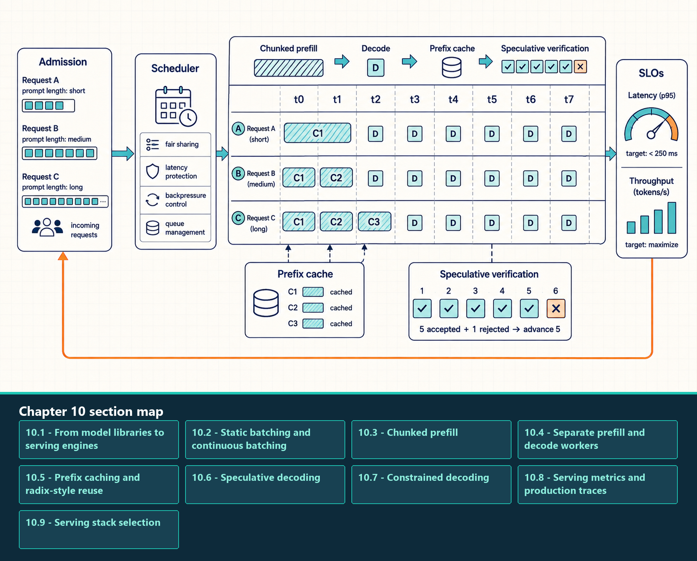
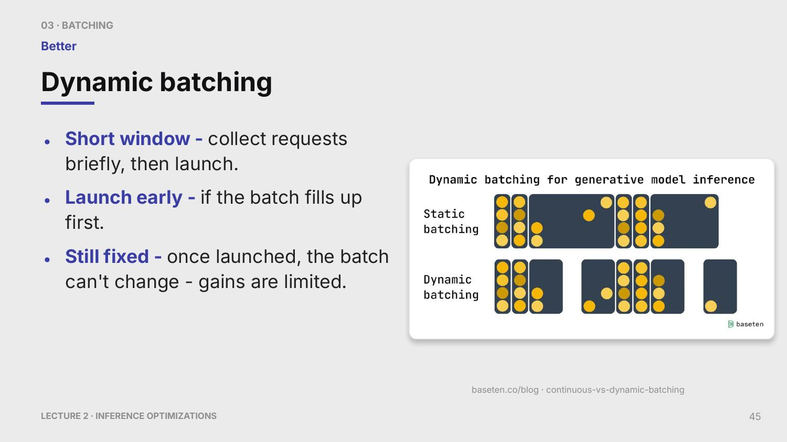
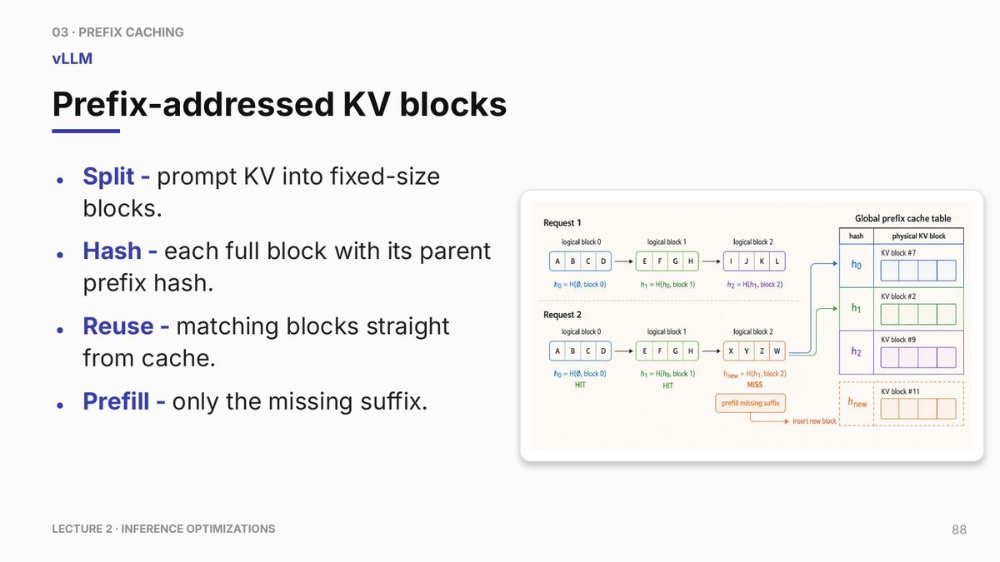
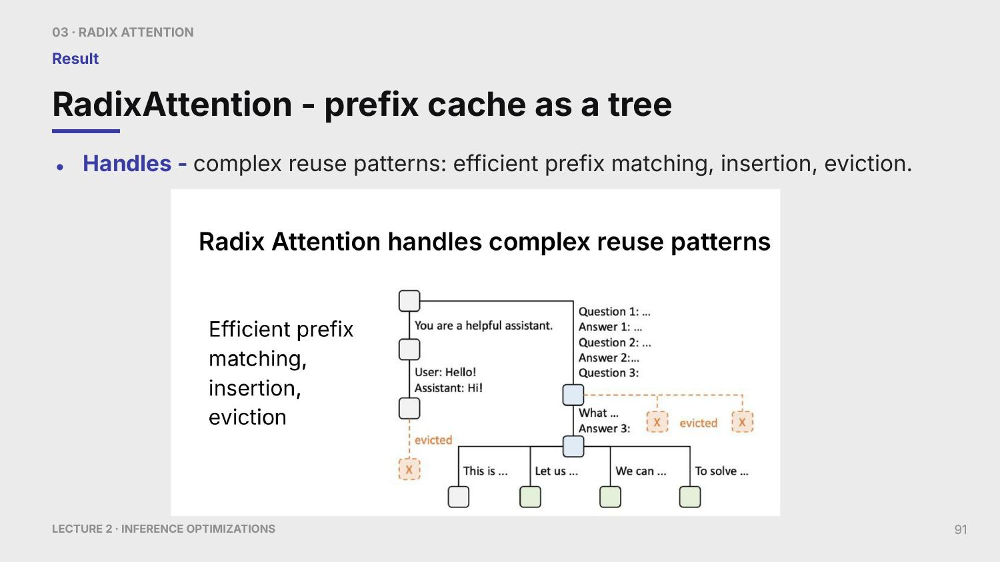
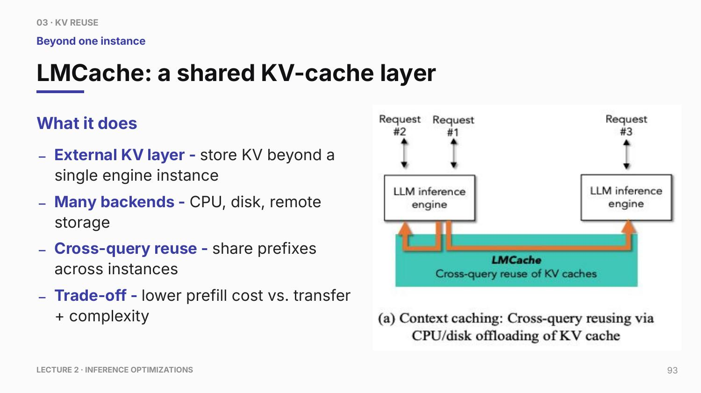
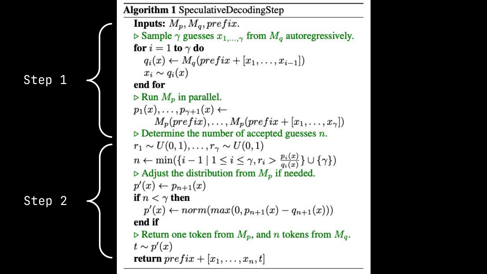
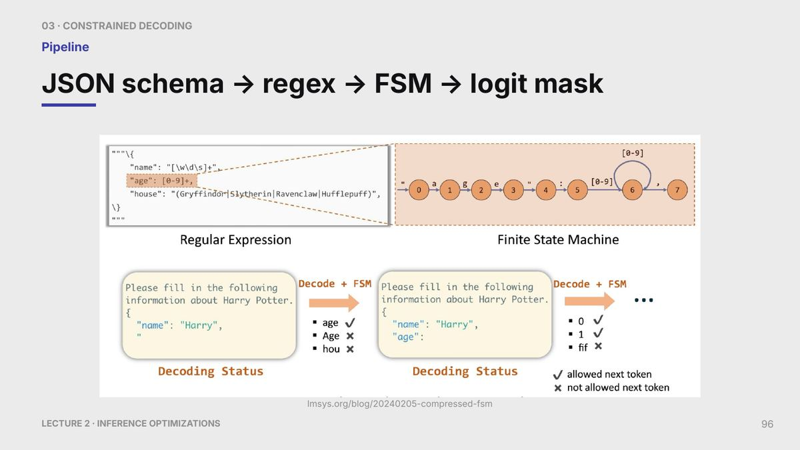

10 Serving Engines
Chapter 9 described one worker’s decode loop and the KV-cache state it reads and extends. Production service adds many concurrent requests, so a serving engine must decide which requests enter memory, which ones advance together, and where their cache blocks remain. Inference engine is a broader deployment term that can include model runtimes, compilers, and hardware-specific executors; here, serving engine means the request scheduler and memory manager around model execution.
Engine optimizations operate above individual kernels. They decide which requests run together, which cached prefixes can be reused, how long prompts are interleaved with decode work, and whether a smaller draft model can reduce the number of expensive target-model steps.
The serving-engine layer is where throughput and latency trade-offs become explicit. More aggressive batching can improve utilization but increase waiting. Prefix caching can reduce work but needs exact token-prefix matching and cache validity. Speculative decoding can reduce serial target steps but depends on draft quality and acceptance rate.
A production serving engine coordinates many active decode loops. Continuous batching decides which requests advance together, the KV-cache manager decides where their blocks live, and speculative decoding may allow a request to advance by more than one verified token. These controls share the same capacity, so they must be evaluated together rather than as independent switches.
Production serving adds admission control, token-level scheduling, cache management, prefix reuse, and optional speculative verification around the model kernels.

The timeline distinguishes wider prompt-prefill chunks from repeated decode steps. Prefix caching removes repeated prompt work only for execution-compatible prefixes. Speculative decoding advances by the verified accepted prefix, while rejected proposals still consume draft and verification work. Scheduler settings must be evaluated against latency objectives, throughput, and fairness together.
10.1 From model libraries to serving engines
A model library constructs the tokenizer and model objects, interprets checkpoint configuration, loads weights, and exposes callable forward or generation interfaces. A serving engine uses those components inside a request-processing system that adds admission, shared scheduling, KV-cache block management, worker coordination, streaming, and service metrics.
The same checkpoint can therefore participate in different execution arrangements. Direct model-library calls are useful for controlled baselines and correctness checks. A serving engine adds the control plane needed when many requests compete for memory and GPU time, while still relying on model-library or compiled-runtime components for the model computation itself.
Read the diagram from model semantics to request control. Tokenizer, configuration, checkpoint, and model objects define what computation is executed. Admission, batching, KV-cache policy, worker backends, and streaming define how requests share the execution capacity.
The serving engine has a CPU-side control plane as well as a GPU execution path. The control plane receives API requests, formats inputs, tokenizes text, checks admission constraints, selects batches, allocates or looks up KV blocks, schedules prefill and decode work, and returns streamed tokens. If this scheduler is slow, the GPU can sit idle even when the model kernels are efficient. The following list names CPU-side control-plane responsibilities and the scheduler symptom they can create.
- API formatting: Parse request metadata, sampling settings, adapter selection, schema constraints, and streaming preferences.
- Tokenization: Convert text to token IDs. This is often CPU-side work and contributes to TTFT for short requests.
- Admission control: Decide whether the request can fit under memory, context-length, batch, and SLA constraints.
- KV block lookup/allocation: Find reusable prefix blocks, allocate new blocks, and maintain block tables for active sequences.
- Decode-step scheduling: Choose which active requests advance on the next GPU step and which prefill chunks can be interleaved.
- Scheduler contention: A state where CPU scheduling, tokenization, or block bookkeeping becomes slow enough that GPU kernels are separated by idle gaps.
vLLM is an open-source serving engine built around continuous batching and paged KV-cache management. Its scheduler architecture, split-scheduling patterns, and multi-step GPU execution aim to move enough bookkeeping off the per-token hot path so the GPU sees fewer idle gaps.
The following settings are vLLM configuration examples. Hyphenated names are usually command-line flags; underscore names may appear as Python/config fields depending on the implementation.
--gpu-memory-utilization: Memory-budget flag controlling how much GPU memory the engine may reserve for weights, workspaces, and KV cache.--max-model-len: Context-length flag that bounds worst-case KV-cache growth.--kv-cache-dtype: Cache-precision flag, effective only when the engine and attention kernels support the chosen format.--quantization: Model-loading flag selecting a supported weight-quantization backend.- Batching limits: Controls such as
max_num_batched_tokensandmax_num_seqsthat limit how much work enters the scheduler at once.
A serving configuration is accepted only when admission, cache use, and kernel execution follow the intended path and request-level latency or goodput improves without violating quality or memory limits. Higher GPU utilization alone is not a substitute for the service metric.
These settings control admission and memory budgets; they do not repair a slow attention kernel or an inefficient compiled graph. The next section isolates the batching policy so its effect on request waiting and GPU occupancy can be measured separately.
10.2 Static batching and continuous batching
Batching is the scheduler decision to run multiple requests together so the GPU sees enough work. In autoregressive serving, batching is harder than in ordinary inference because requests generate different numbers of tokens and finish at different times.
- Static batching: Runs a fixed group of requests together until the batch completes.
- Dynamic batching: Briefly waits to collect a fuller launch batch, then runs the launched work mostly as a fixed unit.
- Continuous batching: Updates the active request set at each decode step, also called iteration-level scheduling.
The problem is generation waste. Autoregressive requests finish at different times, and a static batch remains limited by the longest request. Requests that finish early stop doing useful work but can still occupy scheduler and cache capacity until the batch drains. Continuous batching removes finished requests and admits new ones at token-step boundaries, keeping active work packed more tightly.
Request-scheduling timelines show how slots are occupied over decode steps or launch windows. They describe admission and waiting, not model accuracy or kernel throughput.
The following source slide shows requests collected over a short dynamic-batching window and then launched as a fixed group. Continuous batching differs because it can change the active group at token-step boundaries.
Dynamic batching is a short admission-window policy: the scheduler briefly waits to collect compatible requests before launching work.

This improves admission and utilization, but the launched batch is still mostly fixed. It cannot reclaim finished decode slots every token the way continuous batching can.
The cost is scheduler and cache-management complexity. The engine must track which sequences are active, which KV blocks they own, which requests have completed, and which prefill or decode work can be inserted without violating latency targets.
| Dimension | Static batching | Continuous batching |
|---|---|---|
| Admission | Fixed group | Dynamic per step |
| Utilization | Wastes slots after requests finish | Keeps active work packed |
| Latency | Can wait for batch formation | Can reduce waiting but adds scheduler work |
| Cache management | Simpler | Requires dynamic block assignment |
10.2.1 Batching policies
This subsection separates three scheduling policies that are often conflated. The difference is when the scheduler is allowed to form, update, or refill a batch.
Consider three requests that need 2, 5, and 8 decode steps. A static batch reserves the launched group until the eighth step, so the first two requests leave unused slots after they finish. Dynamic batching can wait briefly before launch to form that group, but it still cannot refill those slots during the run. Continuous batching checks the active set after each decode step: it removes completed requests, admits waiting ones whose KV state fits, and forms the next token-step batch. This recovers slots, but every refill requires scheduler work and KV-block bookkeeping, so the gain must be checked against queue time and TPOT.
10.2.2 CPU-side scheduler architecture and vLLM-style optimizations
A fast GPU worker can still underperform if the CPU control plane cannot feed it. The engine reduces idle gaps between decode steps by moving avoidable CPU work off the per-token hot path and by scheduling several GPU steps with less round-trip overhead. The examples below show common scheduler goals and the configuration mechanisms used to tune them.
- Separated API server: Keeps HTTP/gRPC parsing, authentication, request validation, and streaming protocol work away from the engine’s critical scheduling loop.
- Tokenization off the hot path: Moves CPU tokenization and deterministic request serialization before admission whenever possible, reducing TTFT variance for short prompts.
- Multi-step scheduling: Schedules several decode iterations ahead so the GPU worker can replay or advance work with fewer CPU scheduler round trips.
- Async output processing: Lets detokenization, sampling post-processing, and streaming callbacks proceed without blocking the next GPU decode step.
- Request formatting discipline: Normalizes sampling settings, adapters, constraints, and prompt fields once, rather than rebuilding them on every iteration.
max_num_batched_tokens: Scheduler-budget field that caps how many total prompt and decode tokens can enter one scheduling step.max_num_seqs: Scheduler-budget field that limits the number of active sequences kept in flight.--gpu-memory-utilization: Memory-budget flag controlling how aggressively the engine budgets GPU memory for weights, workspaces, and KV cache.--max-model-len: Context-length flag that constrains worst-case KV-cache growth.--kv-cache-dtype: Cache-precision flag, effective only when supported by the engine and kernels.--enable-prefix-caching: Prefix-cache flag enabling exact-prefix KV reuse when the engine can safely match cached prefixes.
These mechanisms do not make the model kernels faster. They reduce idle gaps between useful GPU work. The evidence should therefore appear in a timeline as shorter host-side scheduling regions, fewer CUDA launch gaps, and more regular decode-step cadence.
Continuous batching is beneficial only when the extra scheduler and cache bookkeeping costs less than the capacity recovered from completed or stalled requests. Confirm that trade-off with request-level TTFT, TPOT, throughput, and queue-time distributions rather than GPU utilization alone.
10.3 Chunked prefill
Chunked prefill splits long prompt processing into smaller chunks so one long prompt does not monopolize the GPU. It improves fairness in mixed workloads and can reduce TTFT for short requests behind long prompts. The chunk size is a control knob: too large increases blocking, too small increases overhead.
The mechanism is scheduling, not a new attention algorithm. A long prompt is broken into several prefill units that can be interleaved with decode work or shorter prompts. This gives the scheduler more opportunities to protect interactive latency.
Chunking changes when prompt work is scheduled, not how much attention work the prompt requires. Its success is therefore measured as a better latency and fairness trade-off under a mixed workload, with any change in total throughput reported separately.
10.4 Separate prefill and decode workers
Prefill and decode compete for the same GPU when they share a worker pool. A long, compute-heavy prefill can then delay the short decode steps that control streaming smoothness. Disaggregation sends the prompt to a prefill worker, which builds the initial KV cache, then transfers that cache plus compatible request state to a decode worker.
![Disaggregated prefill/decode separates prompt processing from token generation. A router sends the prompt to a prefill worker, transfers the resulting KV state, and then a decode worker generates tokens. The point is latency isolation, not free throughput. Request and control metadata reach both roles, KV state crosses the handoff boundary, decoded outputs return to the serving path, and model weights are commonly resident in both pools. The design helps only when isolation outweighs transfer and coordination cost.](../assets/fig-m4-c10-f03.jpg)
The decode pool can run steadier token steps, but the handoff adds routing, KV-transfer, and coordination delay. Use chunked prefill when scheduling within one pool protects decode latency; separate the pools only when the measured reduction in decode interference is greater than the added handoff time. Evaluate duplicated model weights separately: they consume memory and hardware capacity in both pools and can make the design too costly or infeasible even when transfer latency is acceptable.
10.5 Prefix caching and radix-style reuse
Prefix caching stores key-value blocks for token prefixes that recur across requests. Radix-style reuse organizes prefixes in a tree so shared prefixes can be found efficiently. The match must be at the token level, not merely string similarity, because the cache represents model-internal attention state.
- Prefix: The initial token sequence shared by one or more requests, such as a system prompt, tool instruction block, retrieval wrapper, or few-shot example.
- Cache hit: A new request starts with a token prefix whose KV blocks are already stored and valid for the same model, tokenizer, adapter, and relevant execution assumptions.
- Radix tree: A tree-like index where common token-prefix paths are shared, allowing the engine to find the longest reusable prefix efficiently.
- Invalidation: The cache entry must not be reused if model weights, adapter state, tokenizer output, positional assumptions, cache format, or prefix tokens differ in a way that changes the stored internal state. Sampling settings matter only when they change the prefix tokens or another state-producing input.
The bottleneck is repeated prefill work. Many workloads reuse the same system prompt, tool instructions, retrieval wrapper, or few-shot examples. If the engine can prove that a new request starts with the same token prefix under the same model and adapter assumptions, it can reuse the stored KV state and skip part of prefill.
Prefix caching mainly improves TTFT and prefill throughput for repeated-prefix workloads. It does not accelerate unrelated prompts, and it does not reduce the cost of generating new tokens after the shared prefix unless those later tokens also become reusable cached state.
The visual separates the logical token prefix from the physical KV blocks that store the reusable attention state.

The cache key must match tokenized prefixes and model/cache assumptions. Reuse is powerful for repeated system prompts but fragile if tokenization, adapters, or decoding context differs.
10.5.1 Prefix cache internals and operating policy
Prefix caching is exact reuse of previously computed KV state. The engine can skip prefill work when the model, tokenizer, adapter state, decoding assumptions, and token prefix match the cached state. The cache key therefore combines token identity with compatible model execution state.
Read the prefix-cache figure top to bottom: exact block hashing, tree reuse, then external KV storage. The diagram separates exact reuse from broader cache reach.
- Prefix-addressed KV blocks: The cache stores complete KV blocks for token prefixes and maps future requests to those blocks when the prefix matches exactly.
- Block hashing: A block key is computed from the tokens in a complete block plus identity information such as model, adapter, and relevant cache metadata.
- Parent-prefix hash: The hash of previous complete blocks is included so identical token blocks in different prefix positions are not confused.
- Complete-block reuse: Most block-based systems reuse only complete blocks; a partial last block may not be reusable until it is filled.
- Per-block LRU: Least-recently-used eviction can free blocks under memory pressure, but it may evict shared trunks that many future requests would have reused.
- Cache-blind scheduling: Routes requests without considering existing prefix state; simpler but can miss expensive reuse opportunities.
- Cache-aware routing: Routes requests toward replicas or workers that already hold useful prefix blocks; improves reuse but adds routing state and load-balancing complexity.
Operationally, place stable content first: system prompts, tool descriptions, policy text, and reusable retrieval context should precede dynamic user-specific fields when the product permits it. Put timestamps, random IDs, request-specific metadata, and volatile instructions later. Serialize prompts deterministically and monitor prefix-cache hit rate, because one invisible formatting change can turn a high-reuse workload into a cache-miss workload.
Cached-input economics are a direct consequence of avoided prefill. If a provider or internal accounting model discounts cached input tokens, the discount is only justified when the serving path actually reuses KV work rather than recomputing the prefix.
10.5.2 RadixAttention and SGLang-style reuse
A radix tree stores a shared token prefix once as a trunk and attaches each different continuation as a branch. When a request arrives, the engine follows matching token spans to find the longest execution-compatible prefix, reuses the KV state on that path, and inserts only the new suffix.

This layout is useful when chat sessions, retrieval flows, or language-model programs repeatedly fork from the same prompt. The engine must still decide which cold branches to evict and whether routing a request toward a worker with a hot trunk is worth extra load-balancing complexity.
Block-hashing systems such as vLLM-style prefix caching are simple and effective for exact complete-block reuse. RadixAttention-style systems expose more sequence structure, which helps branchy agents, chat sessions with common trunks, retrieval-augmented generation (RAG), and structured LM programs. The cost is more complex cache metadata and scheduler logic.
10.5.3 LMCache and external KV layers
An external KV layer is a cache tier outside one GPU worker’s HBM. It reuses or preserves expensive prefill results across requests, replicas, or time windows when that worker’s GPU memory is too small or the cached state would otherwise be short-lived.
An external KV cache moves prefix reuse beyond one engine instance. Instead of storing all reusable KV state only in one GPU worker’s HBM, the system can spill or share KV blocks through CPU memory, disk, or a remote storage service.
LMCache is a concrete example of this external-KV-cache layer. The general concept is the storage tier and lookup policy; LMCache is one implementation example used to make that layer visible.
External KV-cache layers extend prefix reuse beyond one engine process, turning cache reuse into a distributed serving problem.

CPU memory, disk, and remote stores are alternative capacity tiers outside a worker’s HBM. Reads and writes cross the worker/cache boundary, and reuse is valid only for matching model, tokenizer, adapter, cache format, and other state-producing assumptions.
- CPU backend: Higher capacity than HBM and lower latency than disk, but transfer through PCIe or NVLink-C2C-like paths must be amortized.
- Disk or SSD backend: Useful for persistence or very large reuse windows, but too slow for a tight per-token path unless transfers are large and preplanned.
- Remote backend: Can share reuse across replicas, but network transfer and routing decisions can erase the saved prefill cost.
- Invalidation: Cache entries must be tied to model version, tokenizer, adapter, precision, and relevant runtime assumptions.
- Best fit: Long stable prefixes, repeated prompts, multi-replica serving, or workloads where prefill cost dominates transfer cost.
The decision rule is simple: external KV reuse helps only if avoided prefill time exceeds lookup, transfer, placement, and complexity costs. If the network path is slower than recomputing the prefix locally, the external cache becomes a liability.
The exact-match requirement is stricter than natural-language similarity. The cache stores internal layer state for a token sequence, so the reusable boundary is the longest prefix whose token IDs and state-producing assumptions match exactly.
Check cache validity in this order before reusing a prefix. The first mismatch ends the reusable prefix and invalidates its later suffix:
- Token IDs: The KV state comes from the token sequence after tokenization. Compare token IDs; any mismatch invalidates that position and every later suffix.
- Tokenizer and chat template: Formatting changes can produce different token IDs even when the text looks similar. Retokenize and compare IDs rather than raw strings.
- Model weights and adapter state: LoRA adapters, fine-tuned weights, and model revisions change hidden states. Cache entries belong to one model and adapter identity.
- Position and attention assumptions: RoPE scaling, sliding windows, block layout, and cache dtype affect how stored state is interpreted. Reuse only compatible execution states.
- Mutable system or retrieval context: A retrieval snippet or tool instruction can change across requests. Reuse only the stable prefix up to the first changed token.
Prefix reuse is profitable only when avoided prefill work exceeds lookup, transfer, invalidation, and placement costs across the full cache hierarchy. The next question is whether reducing serial target-model work can improve decode when useful prefixes are unavailable.
10.6 Speculative decoding
Speculative decoding uses a smaller draft model to propose several tokens and the target model to verify them. Correctness comes from the verification step: the draft model accelerates proposal, but the target model preserves the target distribution.
The problem is serial target-model decoding. A normal autoregressive loop asks the large target model for one token at a time. Speculative decoding tries to advance several tokens per target-model verification pass by first generating a candidate suffix with a cheaper draft model.
10.6.1 Draft and verify mechanism
The mechanism has four ordered stages: draft a candidate suffix, verify its probabilities with the target model, accept the longest valid prefix, and repair the state after the first rejection. The equations and diagram below define those stages before implementation choices are considered.
The algorithm view separates proposal from verification so the target model remains responsible for correctness.

The serving dataflow is: draft several candidate tokens, verify them with the target model, accept the longest valid prefix, and continue generation from the accepted state.
Let p(x) be the target-model probability for a proposed token and q(x) be the draft-model probability. The draft model samples a short candidate suffix cheaply. The target model evaluates that suffix in a larger verification pass. Each proposed token is accepted with a rule based on how much the draft distribution overstated or understated that token relative to the target distribution. If a token is rejected, the algorithm samples a replacement from a fallback distribution derived from the target and draft distributions, then discards the unaccepted suffix.
Definition - Speculative decoding
Draft model: A cheaper model proposes multiple candidate tokens using distribution q(x).
Target model: The larger model verifies the draft suffix using distribution p(x) and preserves target-model correctness.
Acceptance rule: Accept a proposed token with probability min(1, p(x) / q(x)) under the standard speculative-sampling formulation.
Fallback sampling: When a token is rejected, sample from the corrected residual distribution instead of committing the rejected draft suffix.
Last-token sampling: After all proposed tokens are accepted, sample one additional token from the target model’s distribution so the method can advance beyond the draft suffix.
Speedup condition: Draft cost, verification cost, acceptance rate, and KV-cache handling must combine favorably.
Failure mode: A low-acceptance or expensive draft model can erase the speedup.
The most useful metrics are acceptance rate and wall time. Acceptance rate says how many draft tokens survive target verification. Wall time says whether the extra draft work, target verification batch, and cache bookkeeping reduced latency. Use an evaluation sample from the expected text domain, such as a FineWeb-like public-web sample, because acceptance depends on domain and prompt distribution.
Speculative decoding helps when the target model is much slower than the draft model, acceptance is high, and verification can run efficiently as a batch. It is weak when the draft is inaccurate, the target model is already well utilized, the batch is too small, or rollback/cache overhead dominates. Tuned Lens and other advanced draft-generation ideas can be studied later; the basic draft-verify-accept mechanism is the core engineering concept.
The formal mathematical formulation of speculative decoding rejection sampling (from the Leviathan paper) guarantees that the output distribution is identical to the target model’s output distribution:
\[ \text{Acceptance Probability} = \min\left(1, \frac{p(x)}{q(x)}\right) \tag{10.1}\]
When a draft token x is rejected, a corrected token is sampled from the residual distribution:
\[ p'(x) = \frac{\max(0, p(x) - q(x))}{\sum_{y} \max(0, p(y) - q(y))} \tag{10.2}\]
A simple sequential cost model relates expected progress to the draft acceptance rate alpha, candidate length gamma, and draft-to-target cost ratio c. It assumes a constant independent acceptance probability, gamma sequential draft steps, and one target verification whose cost is approximated by one ordinary target step. Under those assumptions, the expected number of committed tokens per target verification is:
\[ \text{Expected Tokens} = \frac{1 - \alpha^{\gamma + 1}}{1 - \alpha} \tag{10.3}\]
The walltime speedup factor (relative to vanilla target model decoding) is calculated as:
\[ \text{Speedup} = \frac{1 - \alpha^{\gamma + 1}}{(1 - \alpha)(\gamma c + 1)} \tag{10.4}\]
Here c = time(M_q) / time(M_p) is the execution-time ratio of one draft step to one target step. As alpha approaches 1, the expected advance approaches gamma + 1 tokens. Real systems can deviate from this estimate because target verification cost changes with batch shape, cache repair is not free, and requests do not share one constant acceptance probability.
Worked calculation - speculative decoding
Measured inputs: Evaluate a fixed prompt sample with gamma = 4 draft tokens, alpha = 0.8 acceptance rate, and c = 0.2 draft-to-target cost ratio. The draft model proposes tokens; the target model verifies them and supplies retained probabilities.
Expected advance: (1 - 0.8^5) / (1 - 0.8) = 3.36 tokens per target verification. This includes the final target or residual-sampled token, not only accepted draft tokens.
Estimated speedup: 3.36 / (4 x 0.2 + 1) = 1.87x before rollback, scheduler overhead, cache maintenance, and batch-shape effects.
Acceptance examples: For p(x) = 0.10 and q(x) = 0.25, acceptance probability is 0.4. For p(x) = 0.30 and q(x) = 0.20, it is 1.
Validation: Compare the estimate with wall-clock target verification, draft work, rollback, and serving-scheduler time on the same prompt distribution.
A lenience parameter can relax strict acceptance in some research settings and trade exactness for a quality/speed experiment. Tuned Lens is an interpretability method that trains affine probes to decode intermediate transformer states. It is an optional one-model exploration rather than a standard speculative-decoding implementation, so it carries no general exactness or speedup claim.
The exact acceptance rule preserves the target distribution, but speed depends on accepted progress relative to draft, verification, rollback, and cache-maintenance cost. The next question is which draft design and candidate length minimize measured end-to-end latency for the actual prompt classes.
10.6.2 Implementation choices and measurement
The speculative-decoding workshop pattern uses two roles: a target model that defines the desired distribution and a draft or approximation model that proposes tokens. The speculative prefix length gamma is the number of proposed tokens verified in one target pass. The acceptance rate alpha is the fraction of proposed tokens accepted. The cost coefficient c is the draft-step cost divided by the target-step cost.
- Parallel verification: The target model evaluates the drafted suffix in one larger forward pass instead of one target pass per drafted token.
- Acceptance/rejection rule: A proposed token is accepted with probability min(1, p(x) / q(x)), where p is the target distribution and q is the draft distribution for that token.
- Adjusted distribution: After rejection, the replacement token is sampled from the residual positive part of p minus q, which preserves the exact target distribution in the standard algorithm.
- Exactness guarantee: With the standard acceptance and residual-sampling rule, the output distribution matches target-model sampling even though a draft model proposed candidates.
- Lenience: A relaxation that can improve speed by accepting more tokens, but it no longer has the same exact-distribution guarantee and must be evaluated as a quality/speed trade-off.
- N-gram or context-copy draft: A near-zero-cost approximator that proposes tokens from repeated recent context rather than a separate neural draft model. It is attractive when text has strong repetition and model loading a second draft is too expensive.
An example workshop experiment pairs a larger target model with a smaller draft model, tokenizes a FineWeb-like public-web evaluation sample, colors proposed tokens by accepted or rejected status, and reports both acceptance rate and wall time. The text sample defines the workload. Token coloring shows whether speedup comes from long accepted runs or occasional accepted proposals.
Speculative decoding helps when the draft is cheap, aligned with the target, and verification batches efficiently. It is weak when the target model is already saturated by a large batch, when the draft is inaccurate for the domain, when gamma is too large for the acceptance rate, or when KV-cache rollback and CPU sampling overhead dominate.
Acceptance rate shows whether the draft model agrees often enough with the target model for one verification pass to advance several tokens. Read it together with draft cost, target batch efficiency, rollback cost, and serving-scheduler pressure.
| Acceptance-rate range | What it means | Likely speed result | What to do |
|---|---|---|---|
| High | Most drafted tokens survive target verification | Speculation can reduce target-model passes if the draft is cheap and verification is batched well | Increase candidate length carefully until rollback or verification cost grows |
| Medium | Some runs are accepted but rejections are frequent | Speedup is workload-dependent and may vary by prompt domain | Measure by prompt class; tune candidate length, draft model, and batching policy |
| Low | Draft proposals rarely match the target distribution | Extra draft work and rollback can make decoding slower | Use a better draft, reduce candidate length, or disable speculation for that traffic class |
| High acceptance but no speedup | The target path is already saturated or overhead moved elsewhere | Wall time stays flat despite good token acceptance | Inspect GPU timeline, scheduler gaps, KV rollback, and CPU sampling work |
The acceptance rate is therefore diagnostic rather than sufficient. A deployment should keep speculation only when the combined draft, verification, correction, cache, and scheduler path improves the end-to-end metric for the relevant prompt classes.
10.7 Constrained decoding
Constrained decoding restricts output to a structured language, such as a JSON schema, grammar, regular expression, or finite set of choices. It belongs to the serving-engine or decoder layer between model logits and token selection. The reliability benefit is valid structured output; the performance cost is maintaining one constraint state and valid-token mask per active request.
The illustrated path from JSON schema to regular expression, finite-state machine, and logit mask represents one compiled-constraint design. A regular expression or finite choice set can use finite-state machinery directly. Nested JSON or general grammar constraints may instead need parser or grammar-stack state. In each case, a constraint compiler produces runtime state that identifies which next-token byte sequences remain valid.
At every decode step, the constraint runtime keeps the current parser state, derives legal next terminals or byte prefixes, maps those possibilities to tokenizer IDs, masks invalid logits, samples or selects one remaining token, and advances the parser state with that token. Tokenization matters because one vocabulary token can contain several characters or a partial structural sequence; validity cannot be implemented as a simple one-character lookup.
The pipeline view places the constraint state between logits and token selection.

The constraint system masks invalid tokens before sampling or selection. It improves validity but can add CPU-side work, scheduler work, or smaller effective token sets.
Definition - Constrained decoding
Constraint source: Schema, grammar, regular expression, finite-state machine, enum, or another validity rule.
Constraint state: The current parser, automaton, or grammar-stack state after consuming the generated token prefix.
Valid-token mask: A vocabulary-sized allow or deny mask derived from that state before sampling or greedy selection.
Benefit: Higher structured-output reliability.
Cost: Constraint compilation, parser-state updates, token-to-grammar matching, mask construction, and possible batch fragmentation.
Constrained-decoding state trace
Compile once where possible: Normalize a reusable schema or grammar into the runtime representation before requests arrive. Dynamic per-request schemas add control-plane work.
Keep per-request state: Each active request carries its own parser or automaton state because its generated prefix differs from every other request.
Build or reuse the mask: The runtime maps legal continuations to tokenizer IDs. Engines may cache masks for repeated states, but arbitrary schemas can make this CPU-heavy.
Mask logits and select: The model still computes logits. The constraint layer removes illegal choices before sampling or greedy selection.
Advance and observe: Consume the selected token, update state, and measure mask-build time, constrained TPOT, schema failures, and request grouping effects.
The practical question is whether validity is worth its decode overhead for the traffic class. Group requests with the same constraint when the engine supports it, precompile stable schemas, and measure constrained Time Per Output Token (TPOT) separately from unconstrained decode. Schema enforcement checks JSON structure; application validation checks the business rules.
10.8 Serving metrics and production traces
An observability stack is the production measurement layer around the serving engine. The engine exposes metrics from its scheduler, request queue, token loop, cache manager, and GPU worker processes. A metrics collector stores those time series, and a dashboard turns them into views an operator can inspect during incidents or capacity planning.
Prometheus is commonly used as the metrics collector: it scrapes HTTP endpoints exported by services and stores numeric time series. Grafana is commonly used as the dashboard layer: it queries Prometheus and displays latency, throughput, queueing, cache, and utilization trends. These tools do not optimize inference by themselves; they make the effects of scheduling and cache policy visible.
Production metrics show where a service symptom appears and narrow the next investigation. They do not prove one cause by themselves, because queueing, kernels, memory, scheduling, and communication can affect the same latency measurement.
- Time To First Token (TTFT): Measures elapsed time until the first generated token. High TTFT can come from queueing, tokenization, prefix-cache misses, prefill work, communication, or cold setup; use traces to separate them.
- Time Per Output Token (TPOT): Measures average decode time per generated token under the stated convention. Spikes can come from memory traffic, launch gaps, scheduler work, preemption, communication, or competing prefill.
- Queue Time: Measures the time requests spend waiting in the scheduler before admission. Useful for tracking utilization vs. SLA compliance.
- KV Cache Utilization: Tracks occupied cache blocks or bytes under the engine’s definition. High use may reflect useful admission or inefficient retention; approaching the configured limit can cause waiting, eviction, recomputation, or preemption depending on policy.
A practical serving dashboard should group metrics by the subsystem that owns the symptom. The panel below is illustrative: it names the signals an operator would want when deciding whether the bottleneck is prefill, decode, KV memory, speculative execution, or the CPU control plane.
| Panel group | Example signals | Question it answers |
|---|---|---|
| Latency | TTFT p50/p95/p99, TPOT p50/p95/p99, inter-token latency, end-to-end latency | Which user-facing latency path is failing? |
| Scheduler | Queue time, admitted sequences, running sequences, prefill/decode batch sizes, max batched tokens | Is the CPU control plane or admission policy starving the GPU or over-batching requests? |
| KV cache | Cache used/free blocks, evictions, preemptions, prefix-cache hit rate, cache migration count | Is serving capacity limited by cache memory or by reuse/locality mistakes? |
| Speculation | Draft tokens proposed, accepted tokens, acceptance rate, rollback count, draft/target time | Is speculative decoding actually reducing target-model work? |
| GPU and communication | GPU utilization, HBM bandwidth, kernel gaps, NCCL time for sharded groups | Is the hot path local compute, memory bandwidth, launch overhead, or distributed communication? |
A dashboard identifies when and where a service-level symptom occurs, but it does not prove the lower-level cause. Use the relevant request trace, GPU timeline, memory measurement, or distributed trace to test the hypothesis before changing a kernel, scheduler, cache policy, or network layout.
10.9 Serving stack selection
Serving stacks differ in what they optimize and how much control they expose. Choose a serving stack by model support, hardware target, batching policy, cache strategy, build workflow, observability, and deployment needs.
10.9.1 vLLM and SGLang
vLLM and SGLang are serving engines: they control request admission, batching, KV-cache policy, and the generation loop. Their strongest fit depends on workload structure and reuse.
- vLLM: Flexible high-throughput serving engine built around PagedAttention-style KV-cache management, continuous batching, broad model support, and practical operator controls.
- SGLang: Serving and programming stack for structured language-model programs, agentic workloads, branching, and RadixAttention-style prefix reuse.
vLLM and SGLang are strongest when scheduler and cache policy are the main controls, but their fit still depends on model support and observed traffic structure. The next question is whether a more compiled or packaged stack can trade flexibility for better execution on a fixed hardware and shape range.
10.9.2 TensorRT-LLM and Triton Inference Server/NIM
Compiled and packaged NVIDIA stacks support a narrower set of models and hardware in exchange for optimized engine files, deployment integration, or less setup work. Evaluate the execution engine separately from the endpoint layer.
- TensorRT-LLM: NVIDIA-optimized inference stack that can produce high raw performance on supported hardware and model families, with compiled-engine files and shape-support constraints that must be managed.
- Triton Inference Server: Production serving layer for HTTP/gRPC endpoints, model repositories, versioning, metrics, and ensemble deployment. Transformer execution is supplied by the configured model backend, while Triton owns the endpoint and deployment layer.
- NVIDIA NIM: Packaged NVIDIA inference microservice approach that trades lower integration work for stronger packaging, version, and hardware assumptions.
- Custom inference silicon: Systems such as Groq, Cerebras, SambaNova, Etched, or Taalas change the hardware and compiler base. Model support, memory capacity, interconnect, compiler maturity, and production lock-in become the selection constraints.
Compiled and packaged stacks can reduce execution or integration cost only within their supported model, shape, version, and hardware range. The next question is whether the deployment values local operation, compact formats, and portability more than fleet-scale GPU throughput.
10.9.3 Local and CPU-oriented serving
Local and hardware-constrained stacks emphasize compact model formats, portability, and simple model management. Their objectives differ from a multi-GPU serving engine optimized for high fleet throughput.
- llama.cpp and GGUF: Local-first CPU/GPU/edge inference ecosystem with compact quantized formats. It serves local and hardware-constrained deployment, while high-throughput GPU fleets require a separately tuned serving engine and scheduler.
- Ollama: Local model-management layer that commonly sits on top of llama.cpp-style execution. It optimizes local usability more than cluster-scale scheduling.
A serving engine is the request-scheduling and KV-cache-management layer represented by systems such as vLLM and SGLang. TensorRT-LLM, Triton Inference Server, NVIDIA NIM, llama.cpp/GGUF, and Ollama are related inference or deployment stacks with different scheduler controls and command-line flags.
The table connects a workload and an operating constraint to the stack that is most useful to evaluate first. Measure the actual prompt lengths, output lengths, prefix reuse, adapters, and hardware on the intended deployment path before choosing the stack.
| Workload or constraint | Most relevant stack to evaluate | Why it fits or what to test |
|---|---|---|
| Dense GPU serving with mixed request lengths, broad model support, and many adapters | vLLM | Continuous batching and KV-cache block management target high token throughput; test scheduler overhead and cache capacity under the actual traffic mix |
| Branchy agents, retrieval flows, structured programs, or heavily shared prompt trees | SGLang | Its programming model and RadixAttention-style reuse target structured control flow and prefix sharing; test reuse rate and constraint overhead |
| Supported NVIDIA model and hardware with stable shapes and an accepted engine-build workflow | TensorRT-LLM | Compiled engines can target a narrow set of models and hardware; test build time, dimension coverage, and deployment update cost |
| Production endpoints with model repositories, versioning, or multi-model operations | Triton Inference Server or NVIDIA NIM | Deployment controls, metrics, and lifecycle management can determine the fit; test the execution backend as well as the endpoint layer |
| Local, offline, privacy-sensitive, or hardware-constrained deployment | llama.cpp/GGUF or Ollama | Compact quantized models and local model management reduce deployment footprint; test quality, memory capacity, and interactive latency on the target device |
The main trade-offs are flexibility, model coverage, hardware lock-in, build or compilation cost, production readiness, and whether latency or throughput is the primary target. Test the actual mix of prompt lengths, model changes, adapters, and branchy agent programs instead of relying on one fixed-dimension benchmark.
A serving-engine setting is still only a proposed explanation until it is tested under a fixed workload. Chapter 11 turns scheduler, cache, compiler, kernel, and communication changes into controlled experiments with warmup, synchronized timing, correctness checks, and repeatable reports.